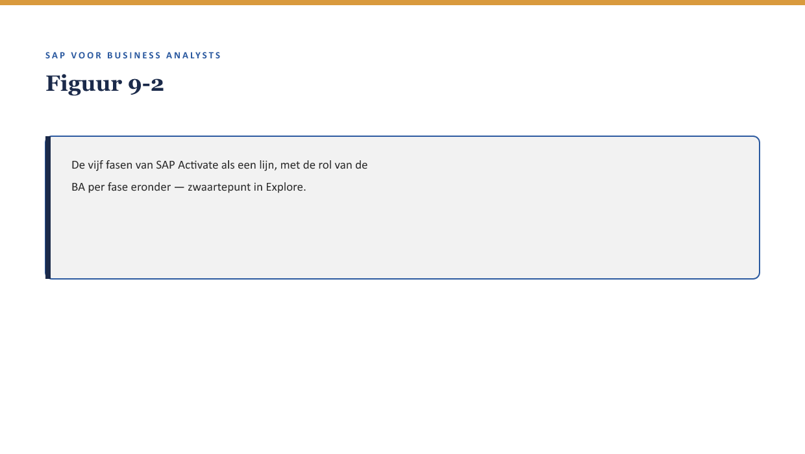

Deel 9 — De BA-werkstroom in SAP-projecten
Reader · Niveau 1 Fundamenten · Cursus SAP voor Business Analysts · Ductus
Leerdoelen
Na dit deel kun je:
- de fasen van SAP Activate op hoofdlijnen benoemen en aanwijzen waar de BA in elke fase een rol speelt;
- een fit-gap-analyse uitvoeren op BA-niveau: bepalen wat “past” (fit) en wat een uitzondering (gap) is, met de vaardigheden uit deel 1-8;
- een requirement schrijven die een consultant daadwerkelijk kan configureren, met het onderscheid customizing/development (↗ deel 6) al verwerkt;
- herkennen wanneer een requirement te vaag is om te configureren, en waarom;
- de twaalf productvarianten uit deel 1 nu daadwerkelijk beoordelen, met alle vaardigheden uit niveau 1 tot dit punt.
Studielast: één dagdeel klassikaal, circa drie uur zelfstudie.
1. Terug naar de twaalf varianten — nu voor het eerst echt
Deel 1 opende met Sannes onbeantwoordbare vraag: welke van de twaalf productvarianten passen binnen standaard FS-PM? Sinds deel 1 heeft zij het modulelandschap leren zien (deel 1), leren navigeren (deel 2), tabellen leren lezen (deel 3), stamgegevens leren beoordelen (deel 4), code leren herkennen (deel 5), het onderscheid configuratie/maatwerk leren toepassen (deel 6), integratie leren doorzien (deel 7), en rapportagevragen leren stellen (deel 8).

Dit deel brengt die acht delen samen in één formeel instrument: de fit-gap-analyse — en levert de vorm om het resultaat vast te leggen als een requirement die een consultant kan configureren.
2. Waarom dit voor de BA telt
Waarom dit voor de BA telt. Alles wat je tot nu toe hebt geleerd, was voorbereiding op dit moment: het punt waarop je zelfstandig kunt meewerken aan het formele hart van een SAP-implementatietraject. Een fit-gap-analyse die een BA niet zelf kan doorgronden, is een fit-gap-analyse waarbij hij afhankelijk blijft van wat een consultant hem erover vertelt.
3. SAP Activate in vogelvlucht
SAP Activate is SAP’s eigen implementatiemethodiek, met — sterk vereenvoudigd — vijf fasen:
| Fase | Kern | Rol van de BA |
|---|---|---|
| Discover | verkennen wat mogelijk is | domeinkennis inbrengen, eerste verwachtingen scherpstellen |
| Prepare | project opzetten, scope bepalen | requirements op hoofdlijnen, projectkaders |
| Explore | fit-gap-analyse, systeem inrichten op hoofdlijnen | de kernfase voor dit deel — fit/gap bepalen, requirements schrijven |
| Realize | bouwen, configureren, testen | requirements toetsen tegen wat gebouwd is |
| Deploy | livegang voorbereiden en uitvoeren | acceptatie, overdracht (↗ testcursus voor de testkant hiervan) |

Kernzin — Dit is een concept in de zin van deel 1 §4.3: de precieze naamgeving en indeling van fasen kan per implementatie of releaseversie licht verschillen, maar het patroon (verkennen → opzetten → analyseren → bouwen → livegang) is stabiel.
4. Fit-gap-analyse: fit, gap, en het gebied ertussen
4.1 Fit: het past binnen standaard
Een productvariant of proces “fit” wanneer standaard FS-PM-configuratie (↗ deel 6 §3.1) het al kan afhandelen, zonder aanpassing.
4.2 Gap: het past niet, en dat vergt een keuze
Een “gap” ontstaat wanneer iets niet binnen standaardconfiguratie past. Een gap kent drie mogelijke vervolgstappen, die je nu kunt herkennen dankzij deel 6:
- Uitbreiden — een uitbreiding bouwen (customizing plus, of development, ↗ deel 6 §3).
- Aanpassen — het bedrijfsproces zelf aanpassen aan wat het systeem al biedt (niet altijd mogelijk of wenselijk, maar wel een geldige optie om te overwegen).
- Accepteren — bewust besluiten de gap te laten bestaan en er organisatorisch omheen te werken.

4.3 Toegepast op de twaalf varianten
Met alles wat Sanne nu weet, kan zij eindelijk Priya’s vraag (“past dit binnen standaard FS-PM, of vergt het maatwerk”) daadwerkelijk mee beoordelen — niet door de techniek zelf te kennen, maar door de juiste vragen te stellen (deel 3 §5.1, deel 5 §6, deel 6 §6) en de uitkomst te herkennen als fit, gap-met-uitbreiding, gap-met-aanpassing, of gap-met-acceptatie.
5. Een requirement schrijven die configureerbaar is
5.1 Waarom “duidelijk voor mij” niet hetzelfde is als “configureerbaar”
Een requirement kan voor een BA volkomen helder zijn en toch onbruikbaar voor een consultant, omdat hij een organisatieterm gebruikt die het systeem niet kent, of een uitkomst beschrijft zonder de voorwaarde te specificeren die tot die uitkomst leidt.
5.2 Drie kenmerken van een configureerbare requirement
- Een concrete voorwaarde — niet “in bijzondere gevallen” maar de exacte voorwaarde die dat bijzondere geval definieert (↗ deel 3 §3.3, domeinen).
- Een concrete uitkomst — wat er precies moet gebeuren, niet alleen wat het doel is.
- Een aanduiding van het verwachte type — is dit waarschijnlijk fit, of een gap die om een keuze vraagt (§4.2)? Je hoeft het niet zeker te weten, maar het benoemen helpt de consultant prioriteren.
5.3 Toegepast op de historische kortingsregel
Vaag: “Regel de historische korting goed in het nieuwe systeem.”
Configureerbaar: “Voor polissen afgesloten vóór 1 januari 2011 én nog steeds actief (niet geroyeerd, niet premievrij) geldt een kortingspercentage van X op de reguliere premie. Ik verwacht dat dit een gap is — deze combinatie van voorwaarden komt niet voor in de standaardproductconfiguratie voor zover ik kan overzien — en wil per uitbreiden/aanpassen/accepteren een advies van jullie.”
6. Terug naar Rob Hendriks’ oorspronkelijke vraag
Deel 1 opende met Rob’s vraag die niemand kon beantwoorden. Aan het eind van niveau 1 kan Sanne die vraag eindelijk structureel beantwoorden — niet met een schatting, maar met een fit-gap-analyse per variant, elk vastgelegd als requirement volgens §5. Dat is precies wat deel 10, de capstone van dit niveau, van je vraagt: dezelfde beweging zelfstandig maken op een nieuwe, onbekende set varianten.
7. Kruisverwijzingen
- ↗ Requirementsmanagement-cursus: een volledige verdieping op requirements schrijven, van waaruit dit deel een SAP-toegespitste selectie put.
- ↗ Deel 6: het onderscheid customizing/development als basis voor de fit-gap-beslisboom.
- ↗ Deel 20-21, niveau 2: fit-gap-achtige analyse toegepast op FS-CM en de ketenintegratie tussen FS-PM en FS-CM.
Kernbegrippen
SAP Activate · Discover/Prepare/Explore/Realize/Deploy · fit · gap · uitbreiden/aanpassen/accepteren · configureerbare requirement
Samenvatting in vijf zinnen
- SAP Activate kent vijf fasen; de fit-gap-analyse — het zwaartepunt voor de BA — speelt zich vooral af in de Explore-fase.
- Fit betekent: standaardconfiguratie dekt het al. Gap betekent: er moet een keuze worden gemaakt tussen uitbreiden, aanpassen of accepteren.
- Alle vaardigheden uit deel 1-8 komen samen in het vermogen om zelf een fit-gap-inschatting te kunnen maken.
- Een requirement die voor een BA duidelijk is, is niet automatisch configureerbaar voor een consultant.
- Een configureerbare requirement noemt een concrete voorwaarde, een concrete uitkomst, en een inschatting van fit of gap.